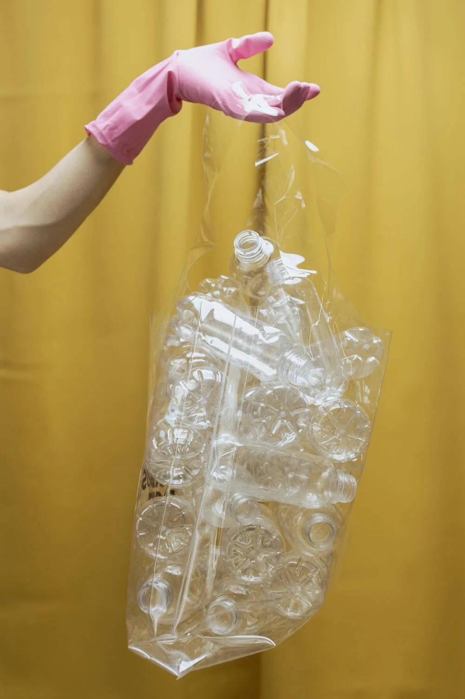
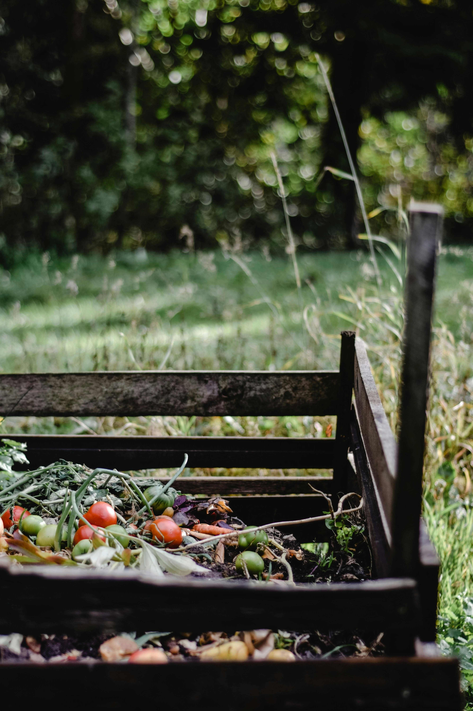
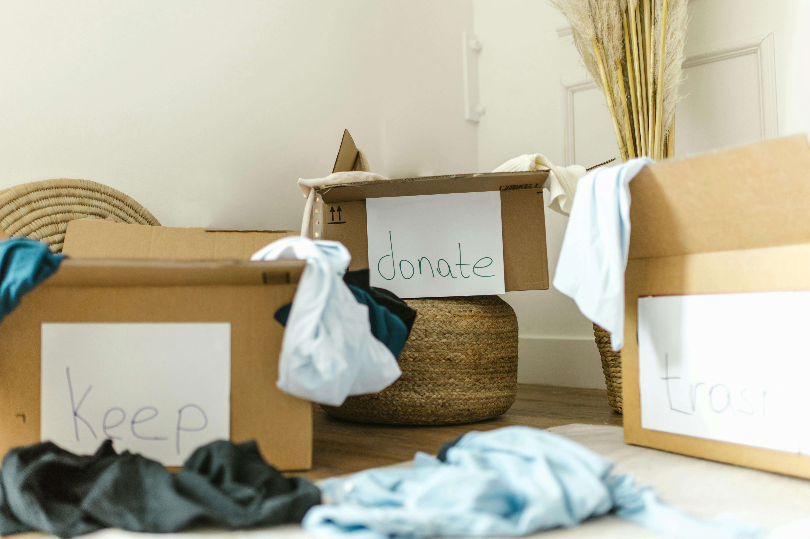
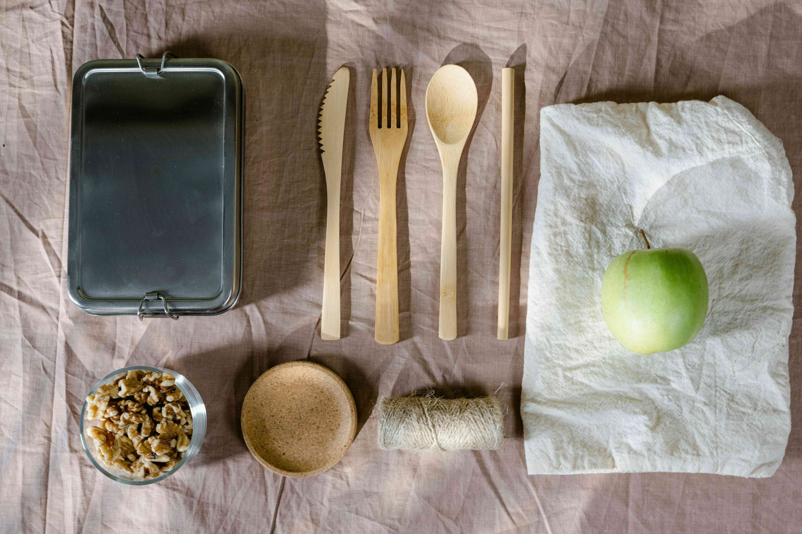
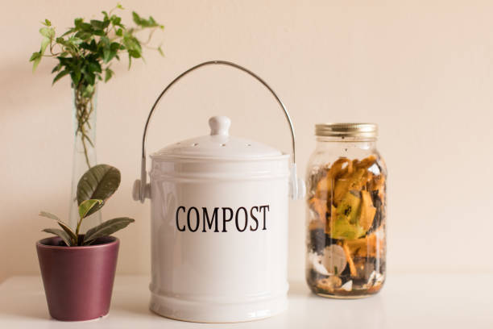

Zero Waste Goals
So what are some Zero Waste Goals that I would like to work towards to achieve a Zero Waste Lifestyle?
-
Eliminate Single Use Plastics
Goal: Completely Remove Single Use Plastic from daily life
How to Achieve it?- Replace plastic bags with reusable bags or jute bags when shopping for groceries.
- When taking away food, bring your own reusable containers instead of using the provided single use containers.
- Stop using disposable straws when drinking refreshments, instead bring reusable straws or drink straight from the cup.

"Refuse plastic. Reuse logic. Restore balance." -
Composting Food Waste
Goal: Composting any food waste after every meal
How to Achieve it?- Buy a food waste compost bin.
- Compost my food scraps after every meal.
- Use composts to grow produce. Produce can be then harvested and eaten.

"Feed the earth, not the landfill." -
Declutter Responsibly
Goal: Get rid of unwanted waste without sending them to the landfill
How to Achieve it?- Donate items to local charity or shelters
- One man's junk is another man's treasure, sell or swap on second-hand platforms
- Recycle electronics through certified e-waste programs

"Declutter your space, not the Earth's grace."
Challenges
By partaking in these Goals to work towards a Zero Waste Lifestyle, there are bound to be challenges. So what are some of these challenges that I might face?
-
Eliminate Single Use Plastics:
Lack of convenient alternatives — Many places still default to plastic containers and straws, especially in takeout and delivery. It is easy to forget to bring reusable items or finding myself without an alternative in situations. Some businesses may not even allow outside containers for hygiene reasons.
-
Compost Food Waste After Every Meal:
Space, odor, and pest control — Composting at home (especially in small apartments) can be tricky. Without proper management, compost bins can attract insects or emit unpleasant smells. Additionally, not having ample outdoor space for composting can be an issue and indoor systems can require upfront investment and maintenance.
-
Declutter Responsibly:
Limited local donation or recycling options — Not all areas have reliable donation centers or e-waste facilities. Some items (like old electronics or furniture) are hard to give away or expensive to recycle properly. Time constraints can also be an issue when trying to responsibly sort and transport items to the correct locations.
How to Overcome these Challenges
Every Problem has a solution, hence what can I do to overcome these challenges and work towards a Zero-Waste Lifestyle?
-
Eliminate Single Use Plastics
Challenge: Lack of convenient alternatives
Solution:
"Own it. Use it. Reuse it." - Pack a small reusable bag with my daily essentials—container, straw, utensils, and water bottle—so that I am always prepared.
- Ask cafes or restaurants if they allow bringing my own containers.
- Start small and build habits: I can focus on one item at a time, then add more swaps gradually.
-
Compost Food Waste After Every Meal
Challenge: Space, odor, and pest control in home composting.
Solution:
"Sort it, seal it, stir it—composting done clean." - Consider different types of compost bins. Some may be more indoor friendly than others.
- Use tightly sealed containers and clean them regularly to prevent pests.
- I can rinse bins regularly and keep the area dry to prevent buildup of residue or mold.
-
Declutter Responsibly
Challenge: Limited access to donation or recycling options.
Solutions:"When we sort with care, we serve the planet and our community." - I can search for local recycling centers, shelters, or donation hubs that accept specific items—some offer pick-up services.
- I can use apps like Carousell or Facebook Marketplace to make it easy to give away or trade items in my area.
- I can plan ahead. Setting aside time monthly to sort items rather than doing it all together at the last minute.